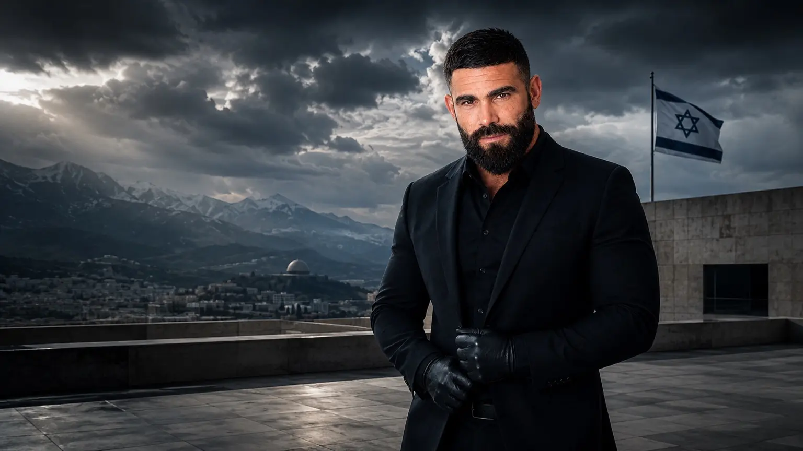

01
1990 → 2011 · התחלה
חרקוב. עלייה. ג׳סי כהן.
ילדות בין שפות, מקומות ומסגרות. שם נולדה השאלה שמלווה אותי עד היום: מה גורם לאדם להרגיש שיש לו מקום?
מקור תקופתי · מקור ראשון ↗
סיפור של תיקון.
נעים להכיר · איגור ופרצקי
נולדתי בחרקוב, גדלתי בחולון, עברתי דרך שירות, משטרה, אבהות ויצירה. היום אני בונה חיבורים בין אנשים, טכנולוגיה והזדמנות — ומשאיר את המקורות פתוחים.
כל צילום ורגע באתר מובילים לפרסום או למקור שממנו הגיעו.

“החיים לא הגיעו עם מפה.להמשיך במסע ↓
אז למדתי לבנות אחת.
עכשיו / 18.09.2026
לא מחכים ל״גרסה הבאה של האתר״. אלה ארבעה דברים מהימים האחרונים שכבר מחוברים למקור.
כתבתי למה חדר יפה או VR אינם ההתערבות; האנשים, הגבולות וההמשכיות הם המערכת.
112 impressions · מקור מחובר ↗ TIKTOK · 09.09ג׳סי כהן → שירות → משטרה → עשייה ציבורית → StartOn → 7YA.
558 views · 441 reach ↗ ACADEMIA × LINKEDIN · 09.09מה מנהיגות אנושית צריכה לשמור כשאלגוריתמים ועומס מידע מתחילים לשחוק שיקול דעת ואמון?
למנוסקריפט והפוסט ↗ LINKEDIN · 11.09StartOn היא משימה. 7YA היא מערכת. מוזיקה, מדיה ומחקר הן זירות. הן לא מחליפות את האדם.
למקור ↗01 / הסיפור שלי
במקום רשימת תפקידים, הנה הרגעים ששינו כיוון — והפרסומים שמאפשרים להכיר אותם מקרוב.
ילדות בין שפות, מקומות ומסגרות. שם נולדה השאלה שמלווה אותי עד היום: מה גורם לאדם להרגיש שיש לו מקום?
מקור תקופתי · מקור ראשון ↗שירות, ביטחון ומשטרה לימדו אותי מה כוח יכול לעשות — ובעיקר למה האחריות תמיד חוזרת לאדם שמולך.
למה עזבתי את משטרת ישראל · וידאו ↗ וידאו אישי · לצפייה ▶
וידאו אישי · לצפייה ▶StartOn התחילה מחזרה למקום מוכר ושאלה פשוטה: איך פותחים לצעירים דלת לטכנולוגיה, יצירה ושייכות — בלי להבטיח תוצאות שהמקורות עוד לא מוכיחים?
הסיפור והמקורות של StartOn ↗ mynet חולון · 13.05.2022 ↗
mynet חולון · 13.05.2022 ↗02 / תוכן מקורי
וידאו, שיחה ארוכה, מוזיקה, מסמך ציבורי ופוסט כתוב. כל כרטיס יוצא למקור; הפצה חיצונית מסומנת בנפרד מתוכן בבעלותי.

וידאו בגוף ראשון. בלי מתווך ובלי תקציר של מישהו אחר.
לצפייה ↗שיחה ארוכה שבה אפשר לשמוע את הדרך בלי לחתוך אותה ל־30 שניות.
להאזנה ↗
NAWAN ft. VEPRETSKI — מוזיקה כחלק מהביוגרפיה, לא כנספח.
קליפ רשמי ↗1,202 views · 42 likes · 6 comments · 4 shares. מקור מדדים: Metricool המחובר לחשבון.
לסרטון המקורי ↗ WIKIMEDIA · OWN WORK · 29.12.2022מסמך ציבורי מוקדם של רעיון החללים האינטראקטיביים לנוער בסיכון.
למסמך ↗
הרעיון, המרחב והחיבור לנוער.
לצפייה ↗ריל אישי שנוצר בזמן פחד ציבורי כהכרת תודה לאנשים שפעלו בשטח.
לריל ↗
Short חיצוני שבו @Igor.vepretski מתויג. צילום מסך מתוארך בארכיון 7YA תיעד 5.1M views, 82K likes ו־717 comments. זהו מדד של ההפצה החיצונית, לא של ערוץ Igor.
למקור החיצוני ↗02 / העשייה שלי
04 / לשמוע בלי לקצר
כאן השיחה לא בנויה לפי האלגוריתם. שני פרקים ארוכים ווידאו אחד שמאפשרים להכיר את הסיפור בקצב אחר.
05 / כתיבה ומחשבה
״טכנולוגיה לבדה אינה ההתערבות. חדר יפה לבדו אינו ההתערבות.״
רפלקציה על המעבר מחדר VR לשאלה מערכתית: שייכות, קהילה, אנשי מקצוע ומדידה.
לקריאה ↗ 7YA · 12.09.2026״האדם לפני המותג. הסיפור לפני המערכת. הראיה לפני הטענה.״
למה 7YA בנויה כזיכרון ציבורי עם provenance במקום עוד פרופיל.
לקריאה ↗ ACADEMIA · SUPERNOAHLeadership for the Algorithmic Age
Founder edition על agency, אימות, גבולות, אמון ועמידות בעידן של הצפת מידע ו־AI.
למנוסקריפט ↗06 / הפיד החי
הקורפוס הציבורי הנוכחי משלב תוכן בבעלותי, שיחות ארוכות, מוזיקה, כתיבה והפצה חיצונית מסומנת. אין סכום reach מלאכותי ואין ערבוב בין מקור שלי להפצה של אחרים.
04 / הנושאים שמעסיקים אותי
05 / ממשיכים מכאן
אפשר לדבר על שיתוף פעולה, הרצאה, StartOn, יצירה או רעיון שעוד אין לו שם.